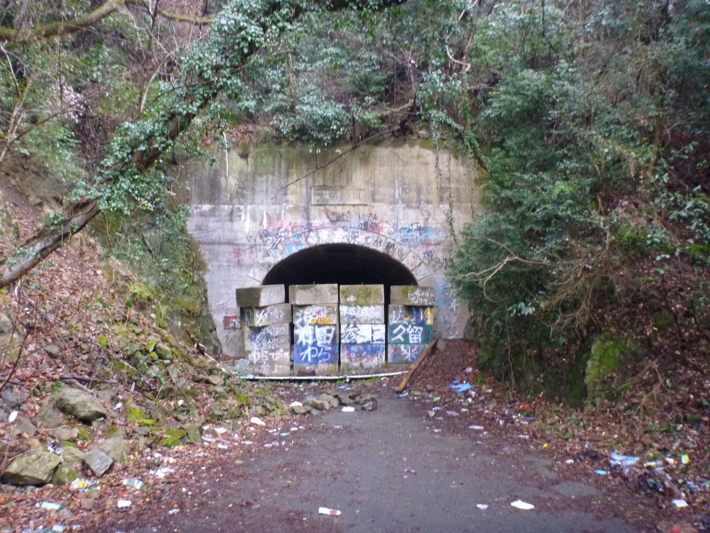
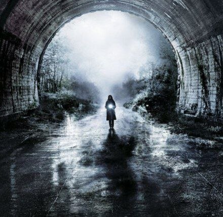
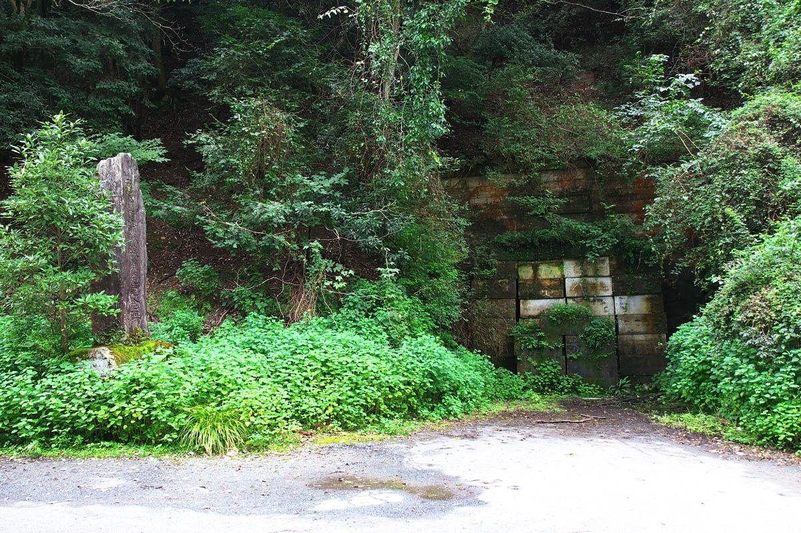

Глубоко в лесах префектуры Фукуока скрывается место, чье имя вызывает страх у многих жителей Японии. Деревня Инунаки — это легендарная заброшенная локация, вокруг которой выросло невероятное количество жутких историй, мистических слухов и городских легенд.
Согласно самым известным поверьям, на въезде в деревню стоит зловещая табличка с надписью: «Конституция Японии здесь больше не действует». Считается, что каждый, кто попадает в это место, сталкивается с изоляцией от внешнего мира, безумием или силами, которым нет рационального объяснения.
Реальность за мифами
Исторически на месте старой деревни действительно существовало поселение, жители которого в основном занимались сельским хозяйством. Однако со временем из-за строительства плотины и сложного горного рельефа деревня опустела, а старый тоннель Инунаки приобрел дурную славу после нескольких криминальных происшествий.
Сегодня старый тоннель заблокирован властями, чтобы предотвратить проникновение любопытных туристов и искателей острых ощущений. Тем не менее, слухи о жутких обитателях леса и призраках продолжают привлекать любителей урбан-туризма со всей страны.
Общая информация
Деревня Инунаки связывается с районом горного перевала Инунаки в префектуре Фукуока на острове Кюсю. В японской поп-культуре это место считается главной «страшилкой» (шинрэй-спот) и аналогом зоны отчуждения.
История региона и старого туннеля
Настоящая история этого места связана с обычным развитием инфраструктуры и событиями конца XX века.
Зарождение поселения
Эпоха Эдо (XVII–XIX века)В долине Инунаки существовала небольшая горная деревня Инунаки-тани. Жители занимались лесозаготовкой, изготовлением древесного угля и фарфора.
Открытие старого туннеля
1949 годДля связи городов Миявака и Хисаяма через горный перевал был построен узкий старый туннель Инунаки.
Новый туннель и заброшенность
1975 годИз-за аварийности и узких проездов был построен современный туннель Инунаки. Старый туннель закрыли для автомобильного движения.
Затопление исторической деревни
1986 годЗавершилось строительство дамбы Инунаки. Исторические территории старой деревни были полностью затоплены созданным водохранилищем.
Рождение городской легенды
1980–1990-е годыВ японских медиа и интернете начинают массово распространяться мифы об отрезанной от законов деревне-призраке.
Убийство в туннеле
1988 годВ старом заброшенном туннеле произошло преступление: группа подростков убила 20-летнего заводского рабочего Коити Умету.
Параметры объекта
- Статус: Закрытая зона / Заброшено
- Локация: Префектура Фукуока, остров Кюсю
- Доступность: Проход к старому тоннелю заблокирован
- Уровень опасности: Высокий риск штрафов и блужданий в лесу
Фильм ужасов

«Проклятие деревни Инунаки» (оригинальное название — Inunaki mura / Howling Village). Это японский хоррор фильм 2019 года, режиссером которого выступил Такаси Симидзу, создатель знаменитой франшизы «Проклятие» (Ju-On / The Grudge).
Основные характеристики объекта:
Степень изоляции
Деревня окружена густыми непроходимыми лесами и крутыми склонами, из-за чего мобильная связь там полностью отсутствует, а GPS-навигаторы дают сбои.
Состояние старого тоннеля
Оба входа в исторический кирпичный тоннель надежно заварены массивными бетонными блоками и заборами с колючей проволокой.
Меры безопасности и ограничения:
- Охрана территории — полиция регулярно патрулирует подъездные дороги к зоне.
- Штрафы за проникновение — попытки нелегального обхода заграждений преследуются по закону.
- Дикая природа — в окрестных лесах обитают опасные дикие кабаны и ядовитые змеи.

Мифы и мистические легенды
Городская легенда о деревне Инунаки сформировалась в конце 1990-х годов на японском форуме 2channel и быстро превратилась в национальный миф.
Главный миф: При въезде в деревню якобы висит табличка: «Законы Конституции Японии за этой точкой не действуют».
Основные элементы легенды:
- Жители деревни якобы отрезаны от мира, практикуют кровосмешение и дикий образ жизни.
- Любой зашедший на территорию деревни человек подвергается нападению жителей с топорами и серпами.
- Вблизи деревни и старого туннеля перестают работать мобильные телефоны, часы и приборы GPS.
- Утверждается, что деревня отсутствовала на официальных картах Японии и была намеренно стёрта правительством.
Реальное положение
Несмотря на популярность в хоррор-культуре (например, в фильме «Деревня проклятых» / Howling Village 2019 года), таинственная деревня-убийца не существует.
Как всё на самом деле:
- Отрезанной от законов деревни никогда не было. Настоящая историческая деревня Инунаки была обычным мирным японским селом, которое прекратило существование в 1986 году из-за затопления при строительстве дамбы. Все жители были официально переселены в соседние города.
- Старый туннель действительно существует, но он заблокирован массивными бетонными блоками. Власти Фукуоки запечатали его, чтобы предотвратить вандализм, драгрейсинг и визиты охотников за привидениями.
- Легенда зародилась из комбинации реальной трагедии 1988 года (убийства в туннеле), мрачного вида заброшенной дороги и интернет-фольклора, подхваченного писателями и режиссёрами.
Культурное влияние
Миф об Инунаки прочно вошел в современную поп-культуру Японии. Истории об этой деревне легли в основу множества японских фильмов ужасов, городских легенд в интернете (creepypasta) и видеоигр.
Несмотря на то, что реальная история места гораздо прозаичнее мрачных сказок, Инунаки продолжает жить в фольклоре как главный символ заброшенности и необъяснимого страха перед японскими лесами.